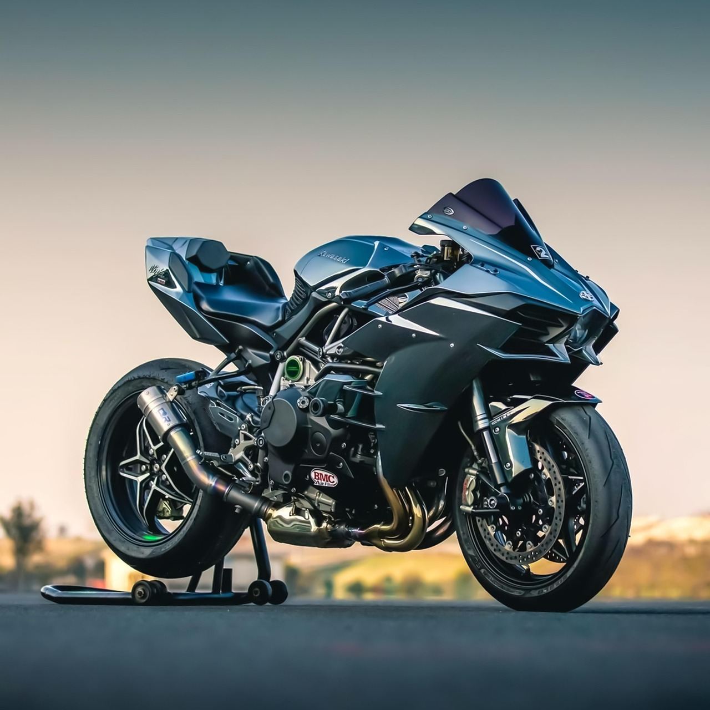

La H2R
La mas veloz
La Kawasaki Ninja H2R es una de las motocicletas más potentes y exclusivas del mundo, diseñada únicamente para uso en pista. Equipada con un motor supercargado de 998 cc, es capaz de generar más de 300 caballos de fuerza, ofreciendo una aceleración y velocidad impresionantes. Su estructura está fabricada con materiales ligeros como la fibra de carbono, lo que mejora su aerodinámica y estabilidad a altas velocidades. Además, cuenta con un diseño futurista y agresivo que refleja su desempeño extremo. Cada detalle, desde el chasis hasta el sistema de escape, está optimizado para el máximo rendimiento. La H2R no es solo una moto, es una obra maestra de ingeniería y velocidad pura.
Visita Kawasaki